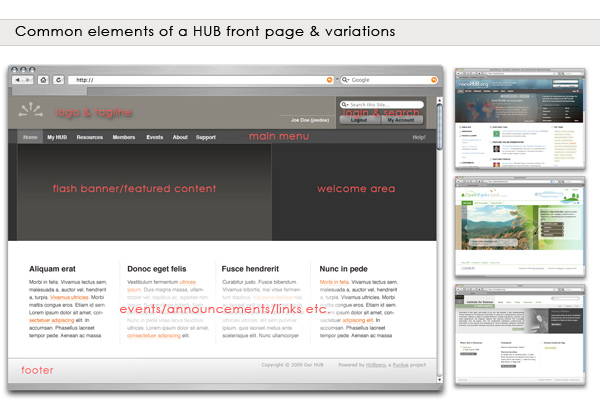

Developers
Designing
Decisions you should make before you write any markup. A hub template is not a blank page: it inherits a grid, a set of element styles, an icon font and the markup of some sixty components, and the design work is mostly about deciding how much of that to keep.

Start from a shipped template
Copy one and change it. Building from an empty directory means reproducing
kimera's index.php and its 27-file less/ tree by hand, and the first
thing you will discover is that the components assume classes you have not
defined.
php core/bin/muse scaffolding copy template core/kimera to app/mytemplate
kimera is the fuller starting point and shows the override-heavy approach.
lucent is leaner and its LESS is organised into tokens/, theme/ and
template/ layers, which is easier to re-colour. Read both.
What the framework decides for you
Four things are not really yours to design, because component markup depends on them:
- The 12-column grid.
.grid/.col/.span6, defined incore/assets/less/grid.less. Component views use it directly. See Elements. .section/.aside/.subject. The main-column-plus-sidebar arrangement that most components render into. Your template supplies the widths; the components supply the markup.- Notification classes.
.passed,.info,.help,.warning,.errorare emitted byjdoc:include type="message"and by components directly. - Icons. Components print
<span class="icon-edit">andHtml::asset('icon', 'edit'). Both need styles from the template. See Fontcons.
You can restyle all of these. You cannot rename them without breaking components, and you cannot skip them without leaving parts of the hub unstyled.
Decide the positions first
The module positions your index.php includes are the contract between the
template and whoever configures the hub. Changing them later means re-siting
every module on a live site, so settle them early.
kimera and lucent agree on notices, helppane, search, user3,
left, right and endpage, so a hub that switches between them keeps most
of its modules. They already disagree about the rest: kimera has
breadcrumbs, footer and welcome, lucent has html-head. Inventing your
own names is allowed, but it strands every module placed in a position you
dropped.
Whatever you choose, declare it in <positions> in
templateDetails.xml so the administrator can pick it from
a list, and give each one a TPL_{TEMPLATE}_POSITION_{NAME} string so it reads
as English.
Decide what is a parameter
Anything a hub might want to change without editing files belongs in the
manifest's <config> block rather than in a stylesheet. kimera parameterises
its header light/dark, a background pattern, two accent colours and their
opacities; kameleon parameterises eighteen colour themes. Both serve the
result through a PHP stylesheet — css/theme.php and css/themes/custom.php —
that reads $this->params and prints CSS.
That is the pattern to copy when a colour has to be configurable. Everything else should be plain CSS.
Decide how far the overrides go
The heaviest part of a hub template is not index.php; it is html/.
kimera ships 32 override files, almost all of them per-component
stylesheets — html/com_projects/projects.css, html/com_resources/resources.css
and so on — that restyle a component's own CSS to match the template.
lucent ships none and accepts the components' default look.
Decide which of those two you are doing before you start, because it is the difference between a week's work and a month's. See Output overrides.
Things that are easy to forget
- Print.
kimerahasless/_print.less; a hub's resource pages get printed. - The error, offline and component layouts.
error.phprenders when the application throws,offline.phpwhen the site is switched off, andcomponent.phpinside every modal and popup. A template that only stylesindex.phplooks unfinished in three places nobody tests. - Dark and high-contrast.
kimeracarriesless/_dark.less. - Right-to-left.
kameleoncarriesless/_rtl.less; no site template does. - The site name is text, not an image.
kimera's masthead printsConfig::get('sitename')inside an<h1>and lets the stylesheet replace it with a logo. Hubs change their name in Global Configuration and their logo in CSS, so neither should be hardcoded inindex.php.
Then build it
- Structure — the files you need.
- Page layout — writing
index.php. - Cascading style sheets — how the stylesheets load.
- Packaging — the manifest.
Rewritten and checked against 2.4-main @ ab49f763b0 on 2026-09-09.